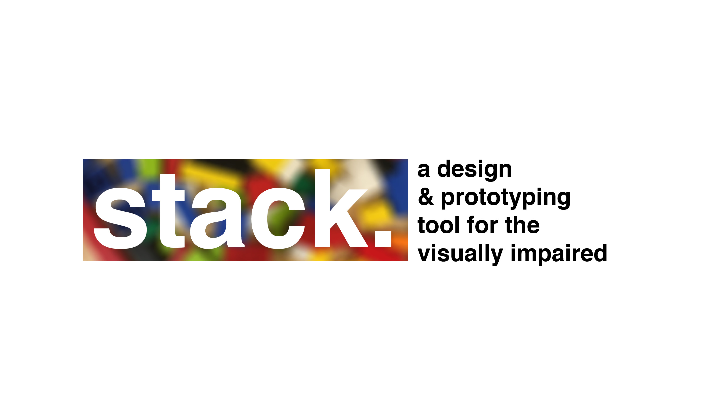
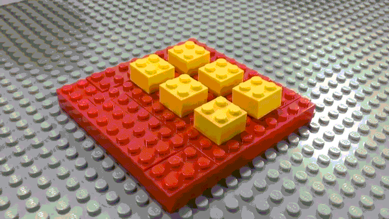
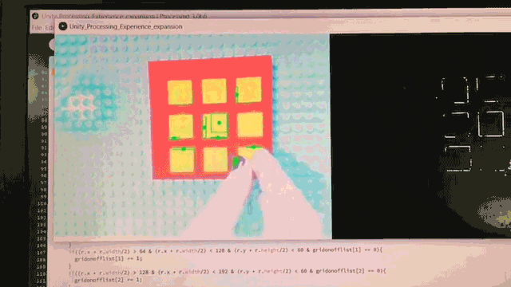
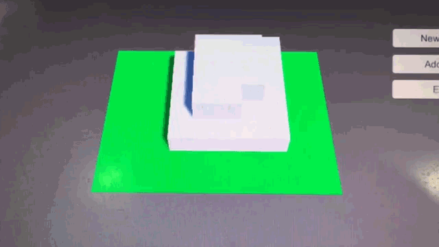

stack.
├── Engine -> Unity3D / 3D Modeling
└── Interface -> Physical Lego Board / OSC Communication
• Team: Dylan J. Crow, Baaria Chaudhary
• Tactile 3D modeling for visual disabilities
• Physical-to-digital translation
• Layer-based construction workflow

Physical Lego interface setup
stack. is a working prototype for a device that can help people with visual disabilities to create simple 3D models using the tactility of Legoes. Utilizing OpenCV, Unity3D, and a Lego board, the user can prototype simple cube-based models that they create layer by layer.
System demonstration: physical to digital workflow
We used OpenCV to do color detection on a grid-divided Lego board. If there was a Lego detected within one of the squares then a signal was sent to the Unity game engine via OSC that a Lego piece is now occupying that portion of the grid, and a 3D cube was then rendered in the relevant square on the field in Unity3D.

The lego board interface

What the computer vision sees

The resulting 3D model
We used simple controls, with a button to go up a layer, and another one to go down a layer, and then one that theoretically exports it as a 3D model so that it can be 3D printed.